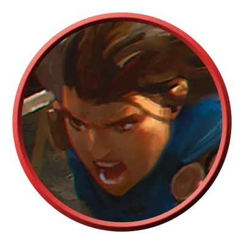

Пеший воитель
Warrior Infantry
Средний или Маленький Гуманоид, Нейтральный

Класс Защиты 13 Инициатива +0 (10)
Хиты 9 (2к8)
Скорость 30 футов
| мод | спас | ||
|---|---|---|---|
| СИЛ | 13 | +1 | +1 |
| ЛОВ | 11 | +0 | +0 |
| ТЕЛ | 11 | +0 | +0 |
| мод | спас | ||
|---|---|---|---|
| ИНТ | 8 | −1 | −1 |
| МДР | 11 | +0 | +0 |
| ХАР | 8 | −1 | −1 |
Чувства пассивное Восприятие 10
Языки Общий
Опасность 1/8 (25 опыта; БВ +2)
Особенности
Тактика стаи. Воитель совершает с Преимуществом броски атаки по существам, если его союзник, не имеющий состояния Недееспособный, находится в пределах 5 футов от цели.
Действия
Копьё. Бросок рукопашной или дальнобойной атаки: +3, досягаемость 5 фт. или дистанция 20/60 фт. Попадание: 4 (1к6 + 1) Колющего урона.
Бонус мастерства +2
Среда обитания Любая
Сокровища Оружейные
Воители
Солдаты и мародёры
Воители — это профессионалы, которые зарабатывают на жизнь своим навыками в боях. Они владеют разными тактиками и умеют использовать преимущества необычных полей битв. Как правило, воители действуют сообща в составе армии или отряда с чётко заданными целями.
Совершите бросок по таблице «Роль воителя» для вдохновения или выберите сами уникальную роль воителя.
Роль воителя
| 1к10 | Воитель — это… |
| 1 | Телохранитель, охраняющий дворянина. |
| 2 | Кавалерист на необычном скакуне. |
| 3 | Храмовник, сражающийся за богоугодное дело. |
| 4 | Дуэлянт, уверенный в своей неуязвимости. |
| 5 | Привратник, задающий бессмысленные вопросы. |
| 6 | Закалённый ветеран, обучающий новобранцев. |
| 7 | Охотник, искусный в истреблении определённых чудовищ. |
| 8 | Отставной генерал, уставший от войны. |
| 9 | Ополченец с самодельным оружием. |
| 10 | Молодой наёмник, стремящийся доказать своё мастерство. |
В рядах пеших воителей встречаются как новобранцы, так и опытные солдаты. Их обучают справляться с тривиальными и немагическим угрозам.